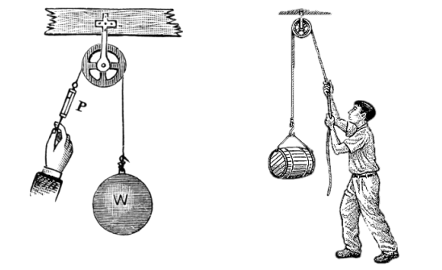
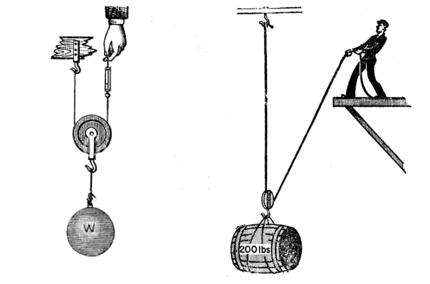
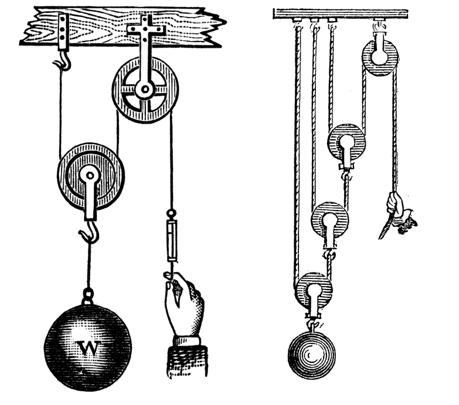
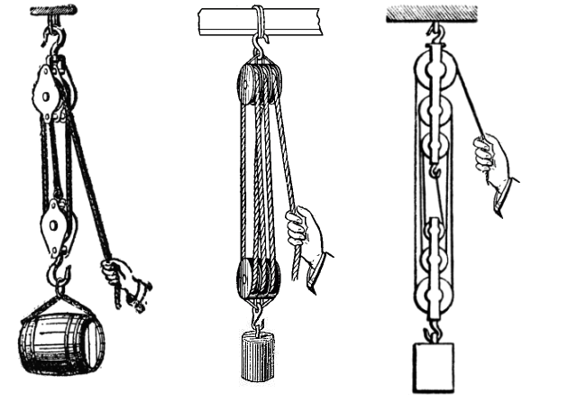
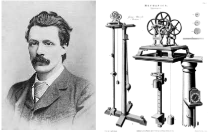
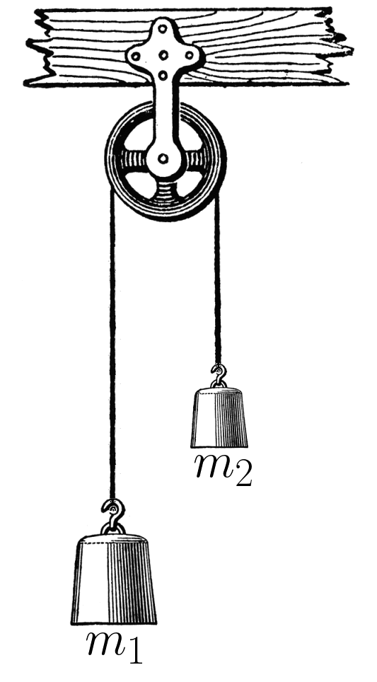

Aula2-14: Polias e máquinas de Atwood
Polias
Polias são peças mecânicas usadas para transmitir forças e orientá-las da maneira mais conveniente. Por isso, seu emprego é muito comum no levantamento de pesos. As polias são classificadas de acordo com o modo como são dispostas no sistema mecânico. Há, basicamente, dois modos de empregá-las:

-
Polia fixa: na prática, a polia fixa não reduz a força necessária para levantar um peso: ela apenas muda a direção da força que precisamos aplicar, o que costuma trazer mais comodidade ao movimento.

-
Polia móvel: já a polia móvel reduz pela metade a força necessária para erguer um peso. Com uma polia móvel cujo cabo tem uma extremidade presa ao teto, o teto sustenta metade do peso e nós arcamos apenas com a outra metade. Atenção: a força cai pela metade, mas o comprimento de corda puxado dobra — o trabalho realizado é o mesmo.
Associação de polias
Como mencionado, o uso de polias fixas não reduz a força aplicada, mas permite redirecioná-la, dando-nos mais comodidade. Já a polia móvel, como vimos, traz vantagem em termos de força. Para aproveitar o melhor dos dois mundos, é comum combinar uma polia fixa (pode haver mais de uma) com uma ou mais polias móveis. Geralmente, as polias são associadas de dois modos diferentes:

-
Talha exponencial: é o instrumento representado ao lado. Nela, há uma polia fixa e n polias móveis. A força aplicada para levantar o peso é dada pela seguinte fórmula:

-
Moitão: é o sistema mecânico representado ao lado. Nesse caso, para descobrirmos a vantagem mecânica obtida com seu uso, devemos analisar o sistema caso a caso: contamos quantos segmentos de cabo sustentam a carga — a força que precisamos aplicar é o peso dividido por esse número.
Máquina de Atwood

A máquina de Atwood é o dispositivo mecânico ilustrado ao lado. Ela foi idealizada pelo matemático e físico britânico George Atwood (★ 1745 — 1807 ✝), que tinha por objetivo estudar experimentalmente as leis do movimento de Newton e determinar a aceleração da gravidade. O equipamento e as observações experimentais foram apresentados em seu livro A Treatise on the Rectilinear Motion and Rotation of Bodies, with a Description of Original Experiments Relative to the Subject, de 1784.
A máquina é composta, basicamente, por um cabo que passa por uma polia fixa e conecta duas massas, uma em cada extremidade. Manipulando-se as massas, altera-se a dinâmica dos movimentos do sistema.
